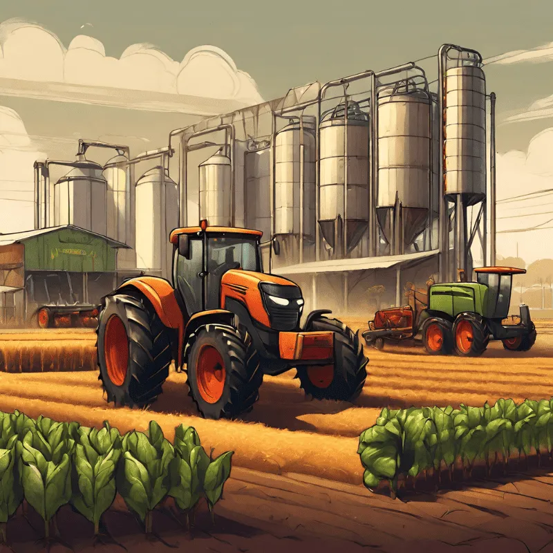

Com o projeto agrinho voce ganha conhecimento e coloca em prática projetos... .
.png) Assinar somente o Alura+
Assinar somente o Alura+
*
reponsáveis por toda a planta e colheita dos graõs .
Agricultura e industrias, tem participação comum na sociedade para melhoramento dos alimentos transgenicos e organicos.
Agricultores trabalhadores.

participe voce também
TV
agricultor